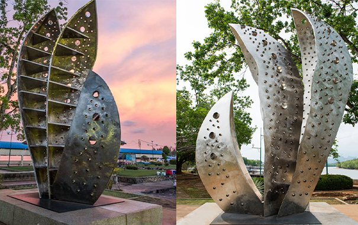
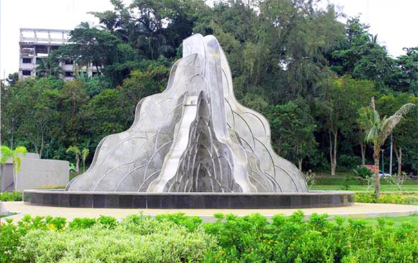
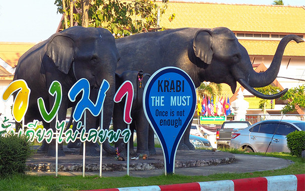
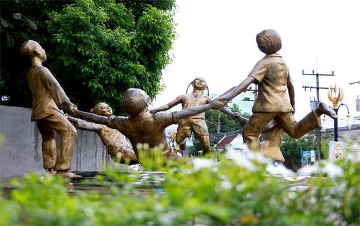
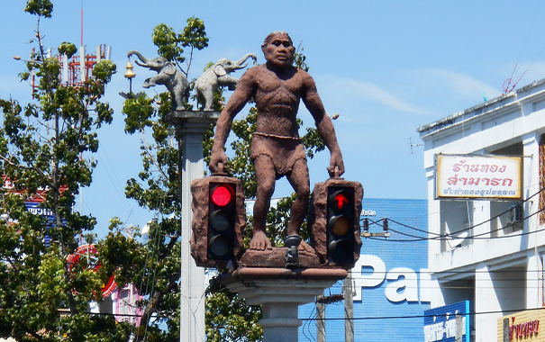
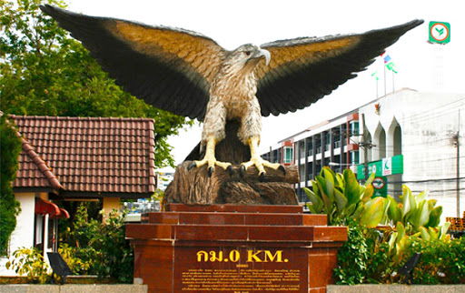
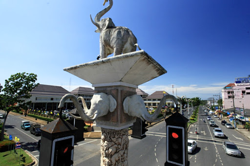
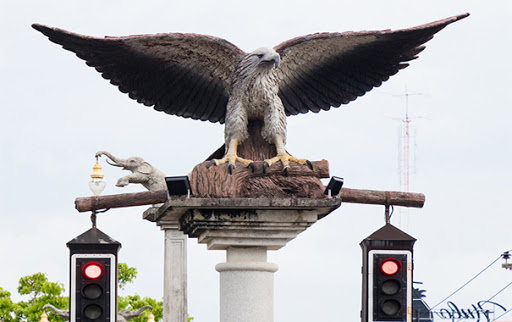

Toggle navigation
W
hykrabi
หน้าแรก
ศูนย์การเรียนรู้
ประติมากรรม เขตเทศบาลเมืองกระบี่
เทวสถาน
องค์พ่อจตุคามรามเทพ
ประติมากรรมปูดำ

ประติมากรรมเรือชีวิต

ประติมากรรมเรือชีวิต

ประติมากรรม โขลงช้าง

ประติมากรรมรู้รักสามัคคี
ประติมากรรมไม้มะหาด และเสียงเพลงแห่งอันดามัน
ประติมากรรมปลาเริงร่า
ประติมากรรมนาวาแห่งอันดามัน

ประติมากรรมสี่แยกมนุษย์โบราณ
ประติมากรรมสี่แยกเสือเขี้ยวดาบ

ประติมากรรม กม.0 (นกออก)

ประติมากรรมสี่แยกช้างชูกระบี่

ประติมากรรมสี่แยกนกอินทรีย์
ประติมากรรมกำแพงเมืองประวัติศาสตร์เมืองกระบี่